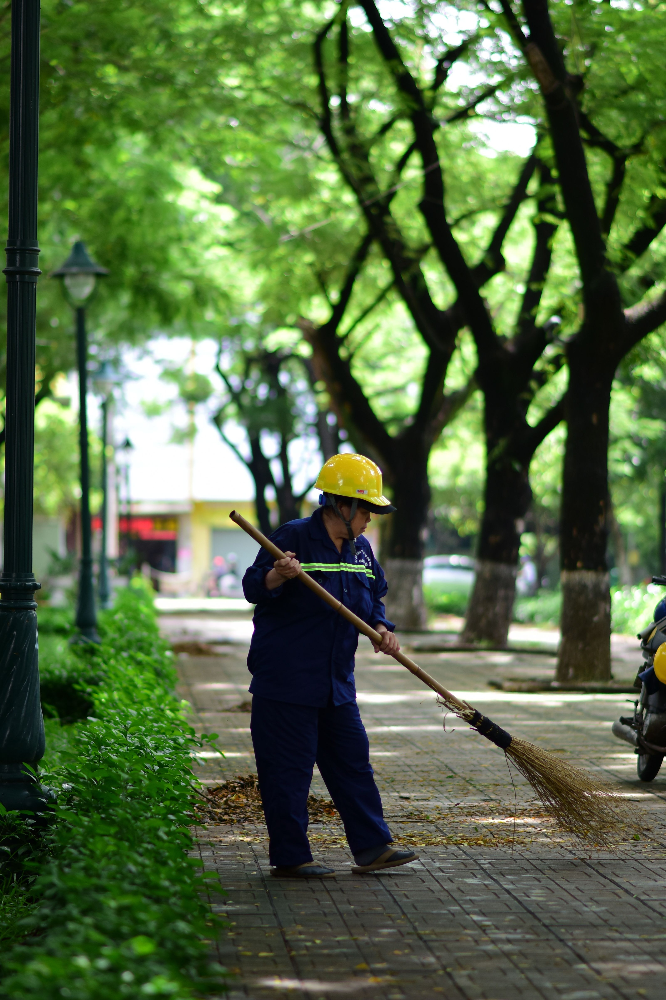
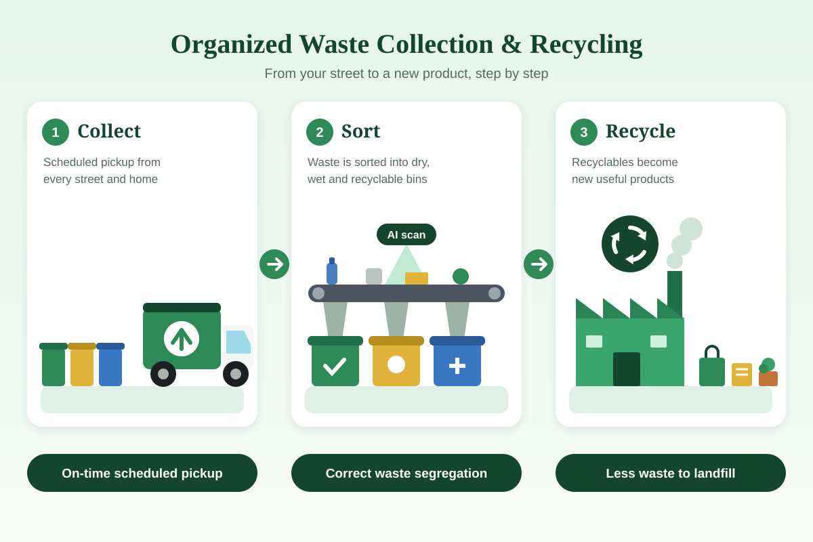

Making Our City Cleaner and Smarter
E-Safai is a technology-based platform designed to improve the way waste is reported, managed and collected in urban areas.
The system connects citizens, administrators and waste collection workers through a single digital platform. It helps citizens report waste-related problems and allows administrators to manage complaints and collection activities.
By using modern web technologies and digital complaint tracking, E-Safai aims to support more organized, transparent and efficient waste management.
Our Mission and Vision
Working towards a cleaner environment through technology, awareness and responsible action.
Our Mission
Our mission is to simplify waste management through a digital platform that helps citizens report waste, enables administrators to manage complaints and supports workers in performing collection activities efficiently.
Our Vision
Our vision is to contribute towards cleaner, healthier and more sustainable cities by encouraging responsible waste disposal and using smart technology for better waste management.
Our Objectives
Important goals that guide our waste management system.
Easy Waste Reporting
Provide citizens with a convenient way to report waste-related problems online.
Organized Collection
Improve the management and assignment of waste collection activities.
Complaint Tracking & Transparency
Enable citizens to track the progress of their complaints and receive timely status updates.
Environmental Awareness
Encourage proper waste disposal, segregation and environmental responsibility.
Technology for a Better Tomorrow
Our system follows a coordinated approach where citizens, administrators and workers work together to manage waste-related activities.
- ✓ Digital complaint registration and tracking
- ✓ Centralized complaint management
- ✓ Manual assignment of tasks to workers
- ✓ Complaint tracking and status updates
- ✓ Organized collection and status updates

Together Towards a Cleaner City
Be a part of the change. Join our platform and contribute towards a cleaner environment.
Join Us Today →